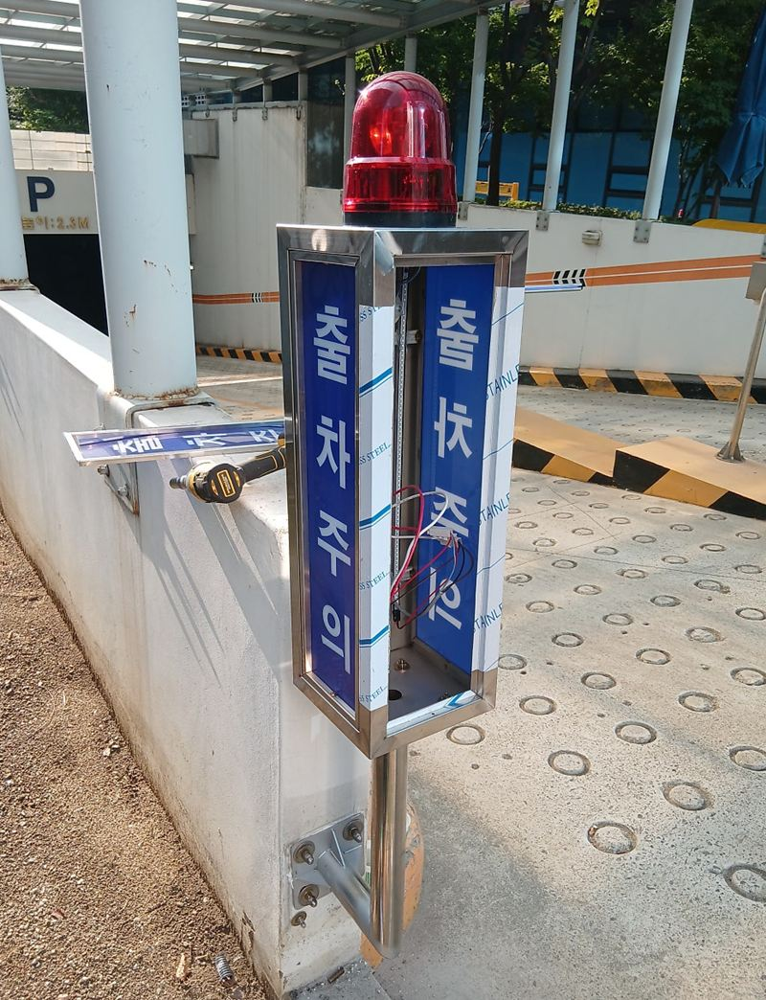
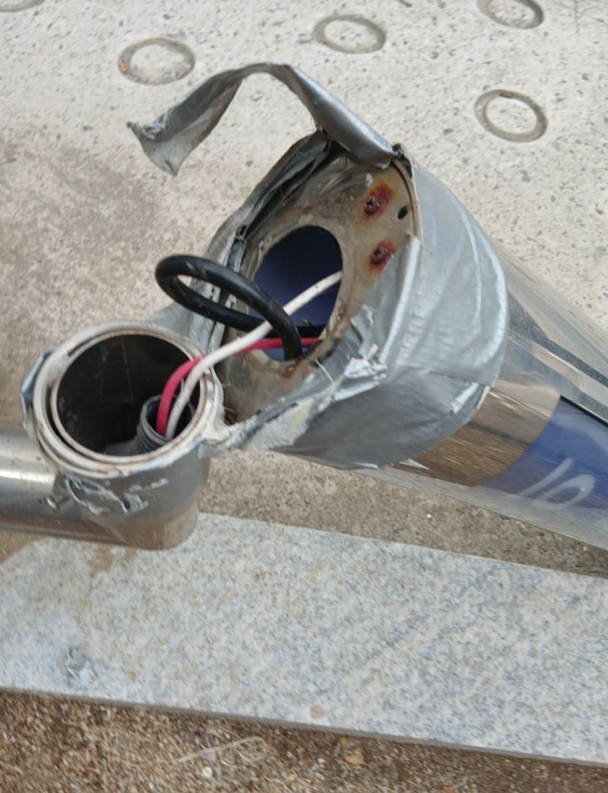
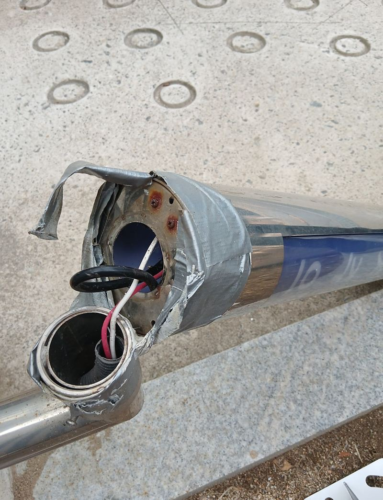
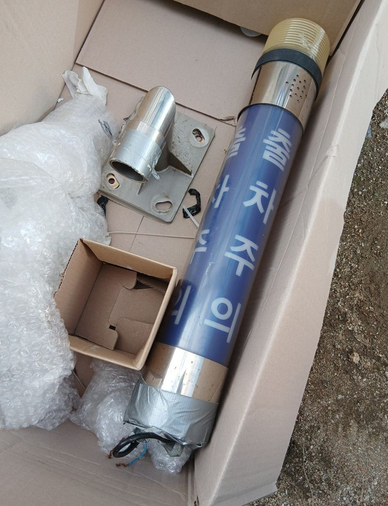
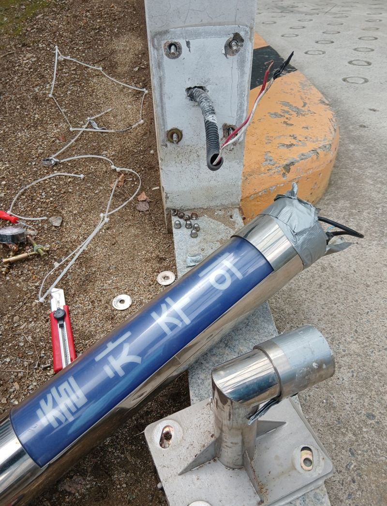
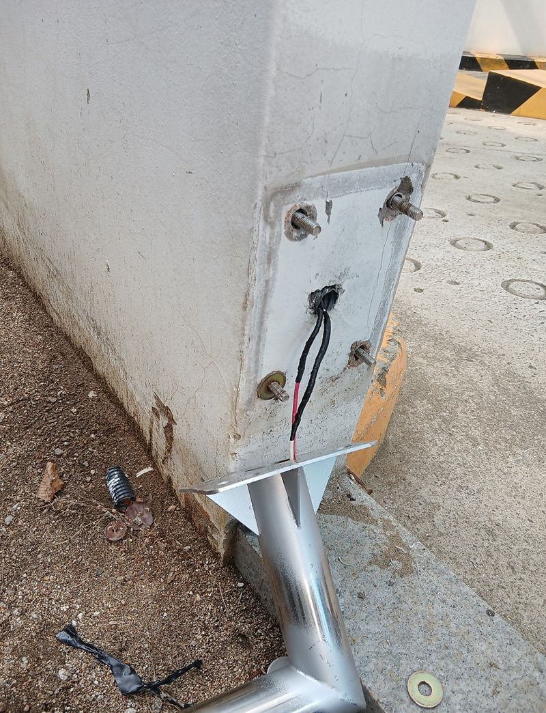
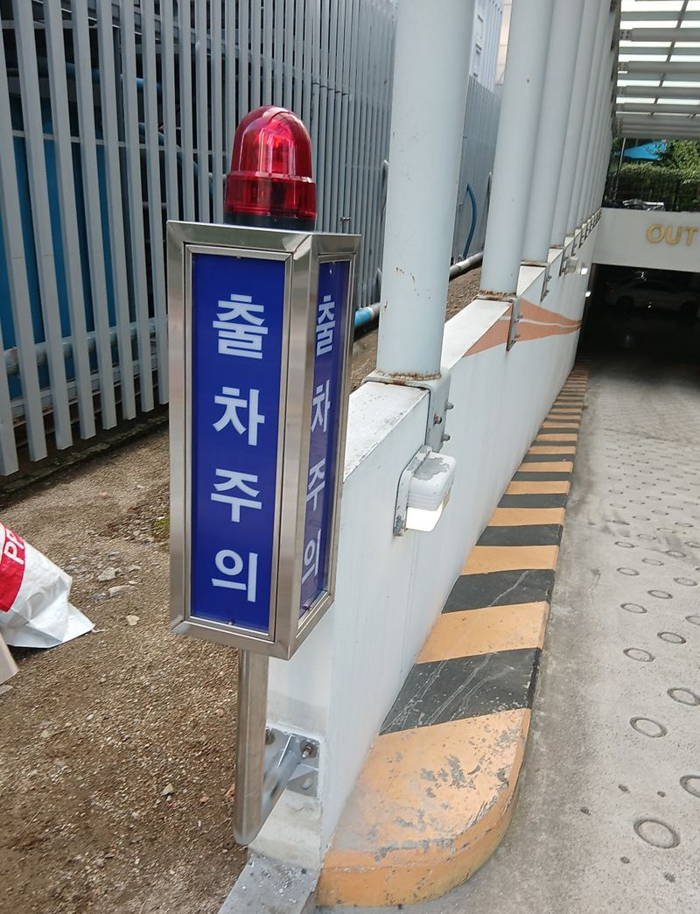

안양 출차주의 경광등 탈락 시 수리·교체 방법


교체 전교체 후← 밀어서 전후 비교 →
"바람에 경광등이 벽에서 떨어져서 케이블타이로 묶어 뒀어요. 이대로 써도 될까요?" 주차장 출구 옆 벽에 달려 있던 출차주의 경광등이 강풍에 떨어진 건물이었어요. 묶어 둔 상태로는 불빛 방향도 틀어지고, 또 떨어지면 지나가는 사람이 다칠 수 있었어요. 같은 방식으로 다시 붙이지 않고, 떨어진 원인이던 용접 고정을 스크류 체결 브라켓으로 바꿔 달았어요.
| 현장 | 안양 동안구 관양동 건물 주차장 출구 벽면 |
|---|---|
| 증상 | 강풍에 경광등 본체가 떨어져 케이블타이로 임시 고정 |
| 원인 | 벽부형 용접 부위가 약해져 바람을 못 버팀 |
| 한 일 | 임시 고정 해체 → 파손 브라켓 철거 → 구멍 정리 → 새 브라켓 타공 고정 → 배선 연장 → 점등 확인 → 실리콘 마감 |
경광등이 벽에서 떨어지는 이유
떨어진 자리를 보니 기존 제품은 벽에 붙은 받침에 본체를 용접해 붙인 방식이었어요. 용접부는 처음엔 단단하지만, 비바람을 맞으며 녹이 슬고 진동이 반복되면 조금씩 약해져요. 기둥처럼 길쭉한 경광등은 바람을 받는 면이 넓어서, 약해진 용접부에 힘이 몰리면 어느 날 한 번에 꺾여요.


그래서 이번에는 "어떻게 다시 붙일까"보다 "다음 바람에도 버티게 하려면 어떻게 달아야 할까"를 먼저 정했어요. 같은 용접 방식으로 붙이면 몇 년 뒤 같은 일이 생길 수 있어서, 볼트로 조이는 스크류 체결형 브라켓 제품으로 바꾸기로 했어요.
떨어진 경광등 다시 다는 순서
임시 고정 풀고 철거
케이블타이를 풀고 남아 있던 본체와 부러진 브라켓을 떼어 냈어요. 전선은 나중에 다시 이어야 해서 피복이 상하지 않았는지 하나씩 봤어요.
기존 받침 잘라 내기
예전 받침과 구멍을 그대로 두면 새 브라켓이 닿는 자리와 겹쳐요. 그라인더로 잘라 내고 면을 매끄럽게 다듬었어요.


새 브라켓 고정과 배선 연장
새 브라켓은 크기가 달라 벽에 구멍을 새로 뚫어 고정했어요. 브라켓 위치가 바뀌면서 전선 길이가 모자라 연장하고, 연결부는 단단히 묶고 절연 테이프로 감았어요.

점등 확인과 실리콘 마감
본체를 체결하고 불이 제대로 켜지고 깜빡이는지 확인했어요. 쓰지 않게 된 옛 구멍과 틈은 실리콘으로 막아 빗물이 들어가지 않게 했어요.
교체 후 꼭 보는 것
- 흔들림손으로 밀었을 때 본체와 브라켓이 따로 놀지 않는지 봐요.
- 점등·점멸전원 연결이 불안하면 불이 끊기거나 소리가 날 수 있어요.
- 보이는 각도출구로 나오는 운전자와 지나가는 사람이 불빛을 바로 볼 수 있는 방향인지 맞춰요.
- 빗물 길타공 자리와 배선 구멍에 물이 들지 않게 마감됐는지 봐요.

건물 관리 쪽에서는 "예전처럼 용접으로 붙인 게 아니라 볼트로 단단히 잡아 줘서 마음이 놓인다"고 하셨어요. 불빛도 다시 잘 들어와 출차 안내 역할을 제대로 하게 됐어요.
경광등 관리, 이렇게 해 두세요
- 반년에 한 번 흔들어 보기바람·비·차량 진동을 계속 받는 자리라 고정 상태를 가끔 확인해 주세요.
- 반사띠 상태밤에는 반사띠가 잘 보여야 해서 벗겨졌는지도 함께 봐요.
- 기울었을 때 바로 연락조금 기운 단계에서 손보면 떨어진 뒤보다 작업이 간단해요.
출차주의 경광등 질문
불만 안 들어오는데 통째로 바꿔야 하나요?
전구나 배선 문제일 수도 있어요. 현장에서 전원부터 확인하고 부품 교체로 되는지 먼저 봐요.
기존 제품과 같은 걸로 다시 달 수 있나요?
같은 제품이 있으면 가능해요. 다만 떨어진 원인이 고정 방식이라면 브라켓 방식을 바꾸는 쪽을 권해요.
기둥에 붙은 경광등도 교체하나요?
벽부형, 기둥형 모두 해요. 기둥 상태에 따라 고정 방법이 달라져요.
전기 공사가 따로 필요한가요?
기존 전원선을 이어 쓰는 경우가 많아요. 선 길이가 모자라면 연장해서 연결해요.
출차 센서도 같이 봐 줄 수 있나요?
센서 위치와 연결 상태를 현장에서 함께 확인해요. 센서 자체 고장이면 부품을 따로 준비해요.
벽이 타일이나 패널이어도 달 수 있나요?
벽 재질에 맞는 앙카를 골라 고정해요. 속이 빈 패널이면 뒤쪽 구조재 위치를 찾아요.
다른 반사경·출차등 현장
경광등이 달린 벽과 떨어진 부위 사진을 준비해 주세요.
전화 상담 010-4517-9872